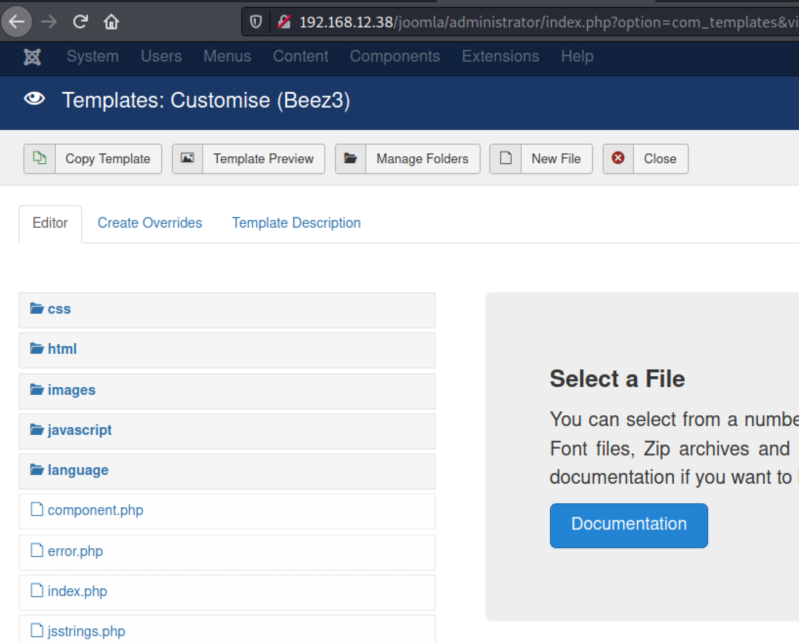

4.1 Log in Joomla
1. Navigate to http://192.168.12.38/joomla/administrator/ and login with the credentials you got previously.
Username: admin
Password: “
3iqtzi4RhkWANcu@$pa$$”
2. Go to “Extensions->Templates->Templates”.
3.Click on the “Protostar Details and Files” link.

4. Click on the “error.php: file to open it.